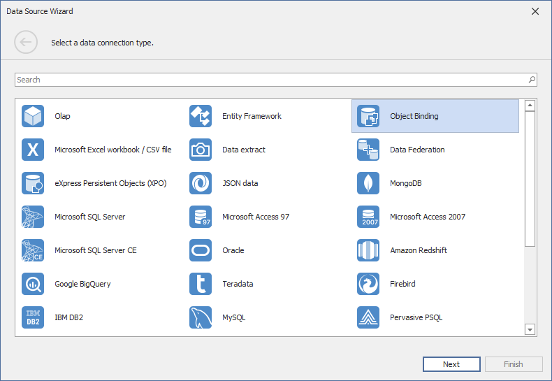
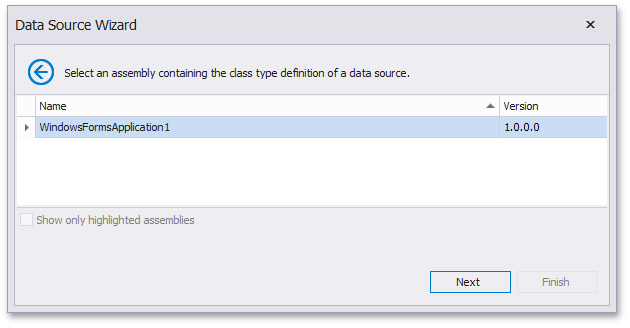
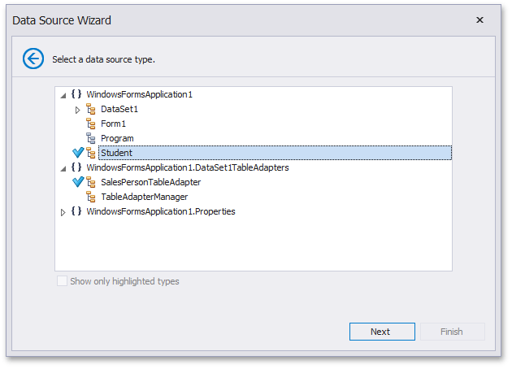
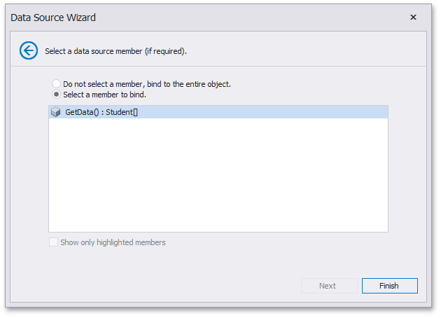

Binding to Object Data Sources
To bind a dashboard to an object data source, do the following.
Click the New Data Source button in the Data Source ribbon tab.

If you are allowed by your application vendor to connect an object data source, select Object Binding, click Next.

On the next page, select the assembly containing the definition of the required class.

Click Next.
Select the class providing the required data and click Next.

For instance, this can be a custom class providing the required data or any TableAdapter used to query a database.
On the final page, select the required data member used to obtain data and click Finish.
